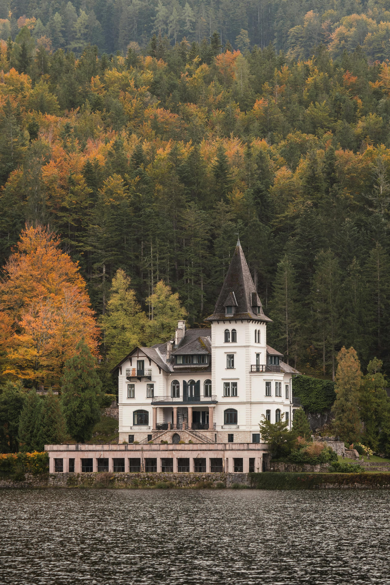
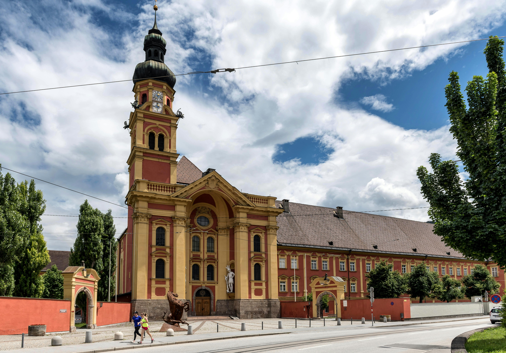
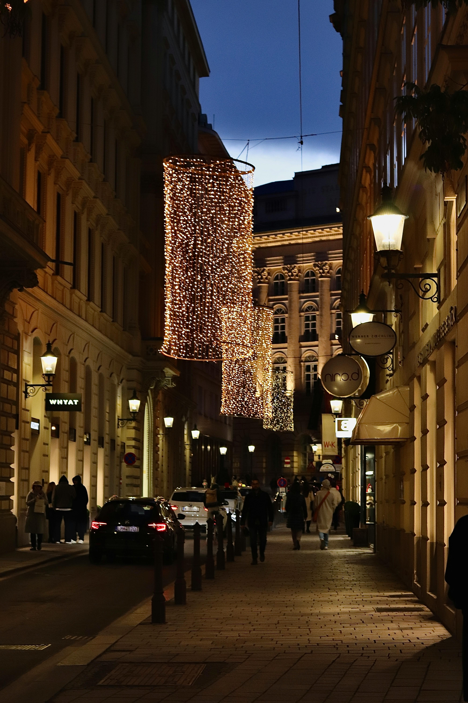
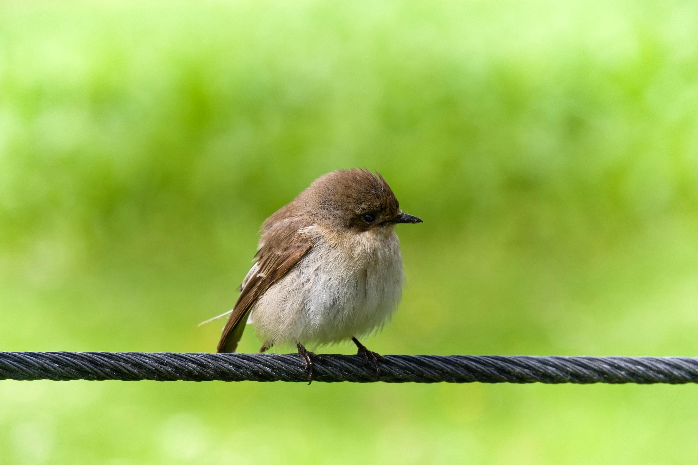

Best Travel Tips

- Best Time to Visit: Winter for skiing, spring and summer for hiking, autumn for festivals.
- Transportation: Excellent train and bus network; renting a car recommended for rural exploration.
- Language: German is the official language, but English is widely spoken in tourist areas.
- Currency: Austria uses the Euro (€); credit cards widely accepted.
- Health & Safety: Austria is safe, with excellent healthcare; travel insurance recommended for mountain adventures.
Best Cuisines and Dining Recommendations

- Wiener Schnitzel: Breaded veal dish, a national classic.
- Apfelstrudel: Warm apple pastry, often with vanilla sauce.
- Sachertorte: Chocolate cake with apricot jam, a Viennese specialty.
- Kaiserschmarrn: Shredded pancake served with fruit compote.
- Goulash: Hearty beef stew with paprika.
Best Accommodation Options

- Luxury Hotels: 5-star hotels in Vienna and Salzburg, with world-class amenities.
- Boutique Inns: Family-owned inns in towns like Hallstatt and Innsbruck.
- Mountain Lodges: Cozy alpine lodges in ski resorts.
- Budget Hostels: Affordable hostels for backpackers in major cities.
Best Local Culture and Traditions

- Music Heritage: Home of classical composers like Mozart and Beethoven.
- Architecture: Baroque and Gothic styles in cities like Vienna and Salzburg.
- Festivals: The Salzburg Festival is a top cultural event for music and drama.
- Christmas Markets: Famous holiday markets in Vienna and Salzburg.
- Alpine Folklore: Rural traditions with folk music and dances.
Best Top Tourist Attractions

- Schönbrunn Palace: Vienna’s imperial palace and gardens.
- Hofburg Palace: Historic palace complex in Vienna.
- Salzburg Old Town: Baroque architecture and Mozart’s birthplace.
- Innsbruck Altstadt: Medieval town surrounded by the Alps.
- Hallstatt: UNESCO World Heritage village with stunning lake views.
Best Transportation Guides

- Public Transport: Efficient train system and buses for both cities and rural areas.
- Cycling: Bike-friendly routes in cities and along scenic paths.
- Car Rentals: Ideal for exploring rural and alpine areas.
- Airport Transfers: Vienna and Salzburg airports offer shuttle services.
Best Outdoor Activities and Adventure

- Skiing: World-class ski resorts in Tyrol and Salzburg.
- Hiking: Scenic trails in the Austrian Alps.
- Cycling: Explore the countryside on well-maintained bike paths.
- Water Sports: Enjoy lakes like Lake Wolfgang for boating and swimming.
- Paragliding: Adventure through breathtaking views of the Alps.
Best Weather and Best Time to Visit

- Winter (Dec-Feb): Cold, ideal for skiing in the Alps.
- Spring (Mar-May): Mild weather for city exploration and hiking.
- Summer (Jun-Aug): Warm and sunny, perfect for outdoor activities and lake visits.
- Autumn (Sep-Nov): Cool, great for cultural festivals and autumn foliage.